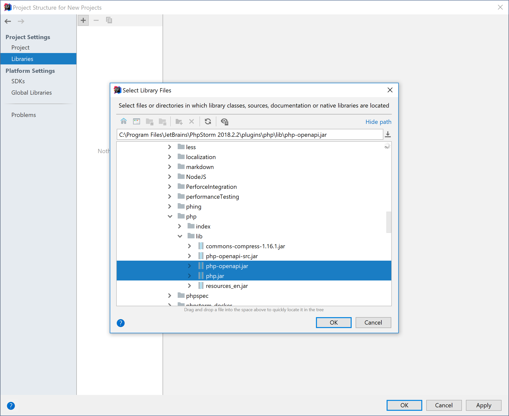
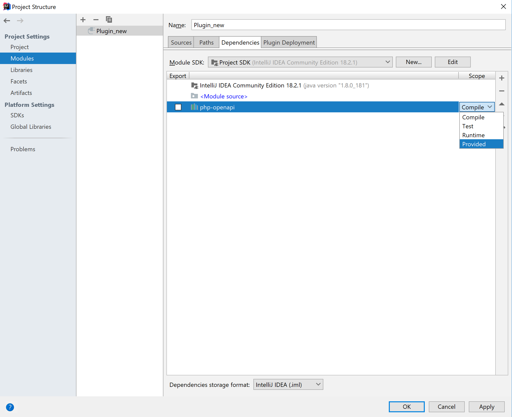

Setting-up the Environment for PhpStorm Plugin Development
General information
Follow steps that are described at Getting Started with Plugin Development.
There are two ways to develop plugins for PhpStorm:
- Use IntelliJ IDEA Ultimate with the PHP plugin installed.
- Use PhpStorm as a targeted IDE in a first place.
The choice affects how you will configure SDK for the plugin. In the first case you need to specify current installation of IntelliJ IDEA as SDK and in the second case you need to specify current installation of PhpStorm. This step is described in Getting Started with Plugin Development.
How to use OpenAPI library
This section explains how to configure the IntelliJ Platform for using PhpStorm OpenAPI.
Adding library to a module
- Open Project Structure File | Project Structure
- Select Libraries
- Press Add button
-
Find and select
php-openapi.jarandphp.jar. They are located in<your_installation_of_PhpStorm>/plugins/php/lib.
- Agree to add the libraries to your Module
-
Open Modules | Dependencies and change Scope to Provided. This step is necessary because otherwise
ClassCastExceptionwill be thrown because two instances of the library will be loaded via different class loaders
Adding dependencies to plugin.xml
- Open
plugin.xmlin the directoryMETA-INF - Add two
<depends>items toplugin.xml:
<depends>com.jetbrains.php</depends>
<depends>com.intellij.modules.platform</depends>